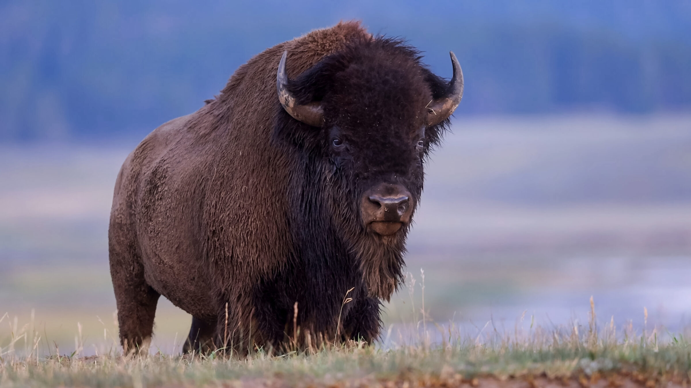

Welcome to the home page of my little fan page about yellowstone, we are here to educate the masses about all of the wonderful aspects of this little slice of heaven on earth.

One amazing aspect of Yellostone is its wildlife such as the Bison shown above, as you visit the park be aware that theese are wild animals so keep a respectful distance as you admire them.
© Jacob Jensen
Here is a great place to study Utah State